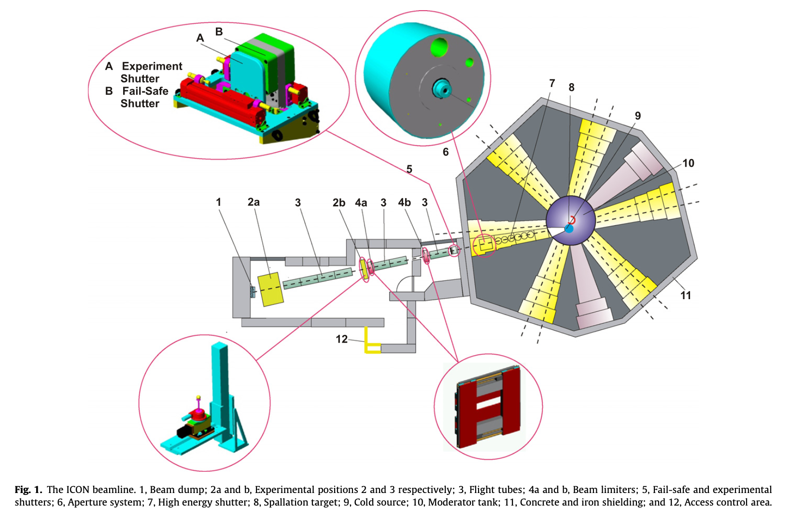
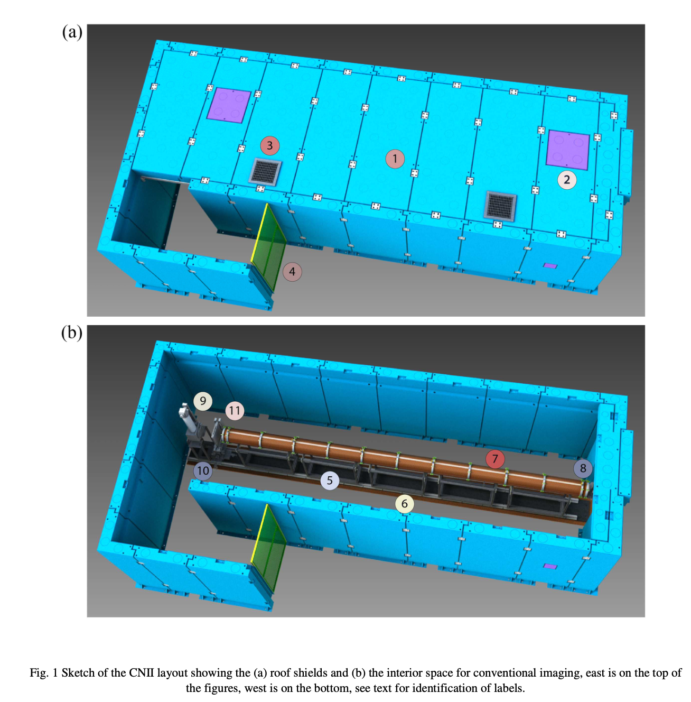

세계의 고분해능 중성자 산란장치
% %
%
\[ \DeclarePairedDelimiters{\set}{\{}{\}} \DeclareMathOperator*{\argmax}{arg\,max} \DeclareMathOperator*{\argmin}{arg\,min} \]
1 광학적 특성
| 시설 | 장치\(^1\) | 빔 입사 단면적 (\(\text{W cm}\times\text{H cm}\)) |
Aperture (mm) |
Flight Path | 기타 |
|---|---|---|---|---|---|
| NCNR | NG6 (C) | 6 x 7.5 58Ni 유도관 |
길이 : 9.5 m (\(\phi\) 30 cm) |
||
| HZB | CONRAD-2 (C) | 3 x 12 m=2, 2.5, 3 |
10 ~ 30 | 길이 : 12 m | illuminated area : 30 x 30 cm2 |
| PSI | ICON (C) | 1, 10, 20, 40, 80 |
2 Layout
ICONS
from Kaestner et al. (2011),

NCNR Cold Imaging
from Hussey et al. (2015)
Hussey, D. S., C. Brocker, J. C. Cook, et al. 2015. ‘A New Cold Neutron Imaging Instrument at NIST’. Physics Procedia 69: 48–54.

3 검출기, 분해능
| Scintillator metrial and thickness | 6Li 50 μm | 6Li 100 μm | Gd 10 μm | Gd 20 μm |
|---|---|---|---|---|
| Resolution (μm) | 39.4 | 42.4 | 20.3 | 27.8 |
Kaestner, A. P., S. Hartmann, G. Kühne, et al. 2011. ‘The ICON Beamline – a Facility for Cold Neutron Imaging at SINQ’. Nuclear Instruments and Methods in Physics Research Section A: Accelerators, Spectrometers, Detectors and Associated Equipment 659 (1): 387–93.